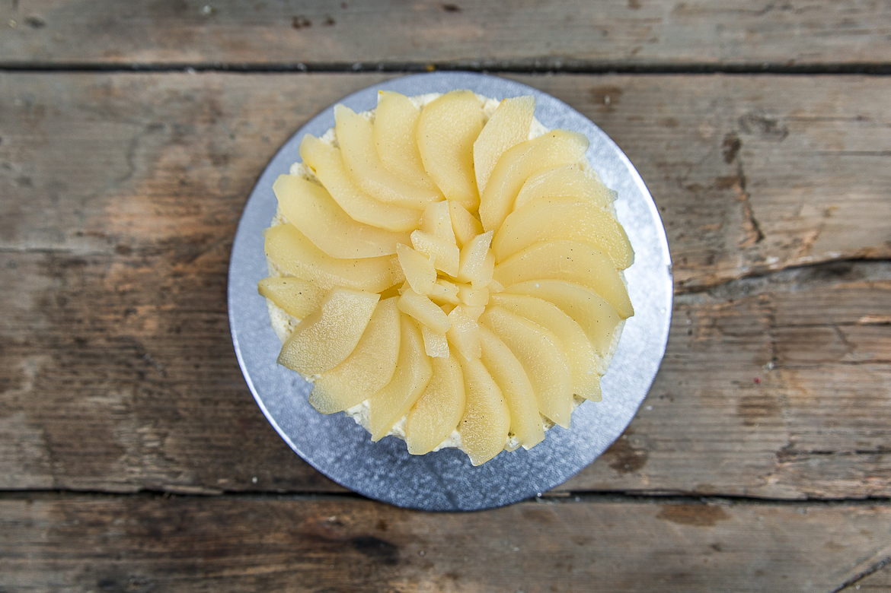
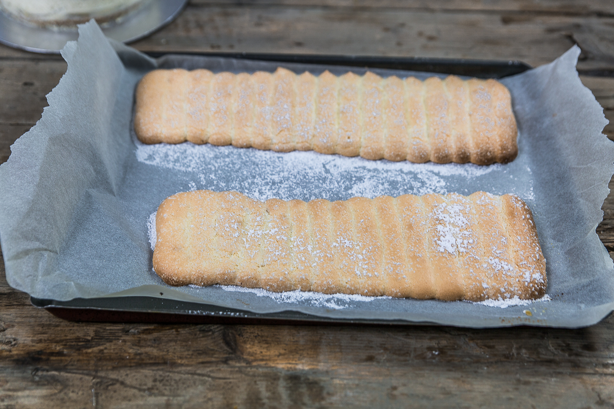
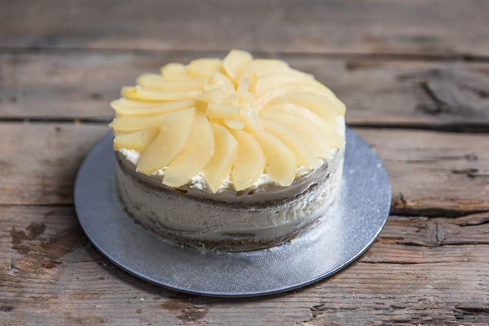

Charlotte aux poires

Aujourd’hui je vous retrouve avec la recette de la charlotte aux poires qui chez moi a remporté un franc succès!
Vous avez dû la voir passer il y a quelque temps sur facebook et/ou instagram car je n’avais pas résisté à vous montrer juste le dessus de cette charlotte aux poires préparée spécialement pour l’anniversaire de ma belle-mère! On pourrait croire que le fait d’avoir un blog culinaire fait que j’ai une grande confiance en moi quand il s’agit d’amener un dessert quelque part (surtout chez beaux-parents) mais pas du tout! A chaque fois le stress est à son maximum… J’ai tellement peur de décevoir ou que quelqu’un n’aime pas ou que le dessert soit totalement raté et qu’au final il n’y ait plus de dessert du tout que du coup je me mets une pression de dingue alors qu’à chaque fois tout se passe très bien, tout le monde est content et moi avec! Bref ce doit être mon côté un peu trop perfectionniste qui me rend totalement dingue (il m’arrive même de faire deux gâteaux, juste au cas où…). Concernant cette charlotte aux poires, elle a à peine eu le temps d’être découpée qu’il n’en restait plus une seule miette (ouf^^). J’ai ensuite eu un feu vert général pour venir ici la publier sur le blog! Je confirme d’ailleurs cet avis général, car elle était vraiment vraiment très bonne et surtout très légère (ce qui est appréciable après un repas d’anniversaire). Je pense que pour les fêtes de fin d’année et autres fêtes en tous genres, elle sera parfaite: pas du tout écœurante, ni trop lourde (tout le monde en réclamait d’ailleurs une deuxième part). La préparation est cependant assez longue et je vous conseille de vous y prendre la veille (car le temps de repos est assez long), ce qui permet de pouvoir s’organiser et de diviser le travail en deux. J’ai essayé de vous détailler la recette un maximum pour que vous puissiez la reproduire à l’identique chez vous et que ce soit également un succès! Faute de lumière je n’ai pas pu prendre les photos de la préparation mais si je la refais je ne manquerai de les rajouter. Pour ceux qui décideront de se lancer dans la recette de cette charlotte aux poires, n’hésitez pas à me poser vos questions et surtout à me dire si elle a fait ou non sensation chez vous (c’est sur que oui)!! De mon côté, je vous dis à très vite et je vous laisse avec la recette 🙂 bonne journée!
Enregistrer
Enregistrer
Enregistrer
Enregistrer
Ingrédients
- Jaunes d'oeufs - 40g (environ 2 gros oeufs)
- Sucre semoule - 80g
- Vanille en poudre - 2g
- Farine - 50g
- Blancs d'oeufs - 60g
- Sucre semoule - 30g
- Sel - 1 pincée
- Eau - 60ml
- Sucre semoule - 50g
- Amaretto - 50ml
- Poires - 6
- Eau - 1L
- Sucre - 100g
- Gousse de vanille - 1
- Sirop de punchage - 2 càs
- Lait - 250ml
- Vanille en poudre - 1g
- Jaunes d'oeufs - 40g
- Sucre semoule - 60g
- Gélatine - 5g
- Crème entière - 250g
- Blancs d'oeufs - 90g
- Jaunes d'oeufs - 60g
- Sucre - 80g
- Sel - 1 pincée
- Farine - 105g
- Sucre glace - 3 càs environ
- Feuille de gélatine - 1
- Sucre - 50g
- Eau - 25ml
Instructions
- Préchauffer le four à 180°
- Dans un saladier ou dans le bol de votre robot, mélanger à grande vitesse le jaune d’œuf, l’œuf entier, la vanille et le sucre (les 80g de sucre)
- Battre pendant 5 bonnes minutes à grande vitesse - on veut blanchir le mélange, vous devez donc obtenir une "crème" un peu épaisse jaune très claire
- Ajouter petit à petit la farine tamisée tout en mélangeant au fur et à mesure
- Mélanger de façon à obtenir un mélange bien homogène
- Monter les blancs en neige avec la pincée de sel
- Quand les blancs commencent à être fermes ajouter le sucre petit à petit (les 30g de sucre)
- Continuer de battre jusqu'à obtenir des blancs bien fermes
- Incorporer très délicatement les blancs en neige au premier mélange (œuf, sucre, vanille, farine) - Attention à ne pas casser les blancs. Utiliser une spatule et incorporer les blancs petit à petit en faisant des mouvements circulaires avec la spatule
- Recouvrir une plaque à pâtisserie de papier sulfurisé
- Verser l'appareil sur la plaque à pâtisserie sur une épaisseur de 1cm
- Cuire 5 minutes(on veut obtenir un biscuit à la vanille tout juste doré)
- Retirer du four et laisser refroidir
- Une fois que la plaque de biscuit a bien refroidi, découper deux cercles de 16cm En vous aidant de votre moule comme emporte-pièce
- Réserver de côté pendant les autres préparation
- Dans une casserole, verser l'eau et le sucre
- Porter le mélange à ébullition
- Hors du feu, ajouter immédiatement l'amaretto
- Laisser tiédir
- Réserver
- Laver et éplucher les poires.
- Coupez-les en lamelles en essayant d'avoir la même épaisseur à chaque fois Pour les couper : couper la poire en deux, puis en quatre, enlever le centre puis couper la poire en lamelles
- Verser l'eau, le sucre, les 2càs de sirop de punchage et la gousse de vanille dans une grande casserole
- Ajouter les lamelles de poires
- Sur feu moyen, laisser cuire jusqu'à l'obtention de lamelles de poires fondantes (vérifier de temps en temps la cuisson, moi j'ai eu le temps de faire les autres préparations en attendant)
- Quand les poires sont bien fondantes, retirez-les du sirop à l'aide d'un écumoire et laissez-les s'égoutter.
- Dans un bol rempli d'eau froide, plonger la gélatine afin de la ramollir
- Dans une casserole, porter le lait à ébullition
- Dans un saladier et à l'aide de batteur électrique ou dans le bol de votre robot, blanchir les jaunes d'œufs avec le sucre (battre environ 5 bonnes minutes le tout à grande vitesse)
- Ajouter la vanille
- Verser le lait bouillant sur le mélange blanchi jaunes/sucre
- Remuer et reverser immédiatement dans la casserole
- Cuire sur feu doux sans cesser de remuer jusqu'à ce que la crème nappe la cuillère et atteigne les 85° (très vite atteint)
- Essorer la gélatine entre vos mains et ajoutez-la au mélange
- Mélanger afin de dissoudre la gélatine dans le mélange
- Verser dans un bol
- Filmer au contact et laisser tiédir
- Dans le bol de votre robot, fouetter la crème entière à vitesse moyenne
- Une fois montée, incorporez-la et mélangez-la à la crème anglaise tiédie à l'aide d'un fouet à main
- Placer au frais et passer au montage
- A l'aide d'un pinceau, imbiber les biscuit à la vanille du sirop de punchage
- Dans un cercle à entremet de 16cm de diamètre et 6 cm de haut, (que vous pouvez chemiser de rhodoïd pour faciliter le démoulage - moi je ne l'ai pas fait et elle s'est très bien démoulée) déposer un premier biscuit à la vanille imbiber de sirop de punchage
- Recouvrir d'une rosace de lamelles de poire (disposez les lamelles de poires en cercles de façon à recouvrir le biscuit à la vanille)
- Ajouter une couche de crème bavaroise (la moitié environ) et placer au congélateur 15 minutes
- Sortir du congélateur et déposer le deuxième disque de biscuit à la vanille
- Recouvrir le deuxième disque d'une rosace de lamelles de poires
- Verser le reste de la crème bavaroise sur le dessus
- Placer au congélateur 5H minimum pour raffermir le tout et avoir par la suite une crème qui se tient
- Préchauffer le four à 180°
- Monter les blancs en neige avec la pincée de sel
- Quand les blancs commencent à être fermes, ajouter le sucre en 3fois
- Battre à grande vitesse jusqu'à obtenir une meringue bien ferme
- Réduire la vitesse et incorporer les jaunes d'œufs
- Mélanger rapidement pour bien les incorporer
- Ajouter la farine tamisée et mélanger très délicatement à l'aide d'une maryse
- Recouvrir une plaque à pâtisserie de papier sulfurisé
- Armer la poche douille de sa douille et verser le mélange dans la poche à douille
- Sur la plaque à pâtisserie, former des bandes collées les unes aux autres de 10 cm de large (essayez d'être les plus régulier possible)
- Saupoudrer de sucre glace et laisser reposer 5 min
- Saupoudrer de nouveau de sucre glace
- Enfourner 10 min (surveillez la cuisson), les biscuits doivent être tout juste dorés
- Sortir du four et laissez-les totalement refroidir.
- Si ce n'est pas déjà fait, sortir la charlotte du congélateur pour faciliter son démoulage
- Découper les bandes obtenues de façon à obtenir la même hauteur que votre charlotte
- Démouler la charlotte.
- Décorer le dessus avec une dernière rosace de lamelles de poires.
- Mettre la feuille de gélatine à ramollir dans un bol d'eau froide pendant 10 minutes
- Faire revenir à feu moyen l'eau et le sucre en remuant souvent (il ne faut pas faire bouillir)
- Ajouter la feuille de gélatine ramollie hors du feu au mélange et mélanger jusqu'à ce qu'elle soit bien dissoute
- Laisser le nappage refroidir quelques minutes avant de s'en servir. S'il durcit ne pas hésiter à le chauffer au bain marie afin qu'il redevienne liquide
- Pour le conserver il suffit de le mettre au réfrigérateur
- Napper les biscuits cuillères du nappage blond que l'on vient de préparer à l'aide d'un pinceau
- Appliquer les bandes de biscuits cuillères tout autour de la charlotte en appuyant très très légèrement pour qu'elles adhèrent.
- Décorer avec des amandes effilées légèrement grillées pour aller avec l'amaretto
- Ici j'ai entouré la charlotte d'un ruban rouge mais libre à vous de décorer comme vous le souhaitez
- J'ai également saupoudrer légèrement les poires du dessus avec des paillettes alimentaires dorées et trois petites framboises que j'ai nappé et trempé dans du sucre glace
- Réserver au réfrigérateur jusqu’au moment de servir
- Se déguste bien frais



Les tips de la communauté
Recette ambitieuse mais appréciée des testeurs. Réalisée avec succès pour occasions spéciales, elle impressionne les convives malgré sa complexité.
Astuces
- Recette longue mais impressionnante pour les occasions spéciales
- Utiliser des biscuits à la cuillère légèrement imbibés pour meilleur résultat
- Ajouter du jus de citron aux poires pour plus de saveur
- Ajouter des framboises pour un côté fruité supplémentaire
- Faire tremper les biscuits dans le sirop de la cuisson des poires
Variantes suggérées
- Utiliser biscuits Brossard si pas de temps pour homemade
- Ajouter des framboises avec les poires
- Aromatiser à la vanille et citron
Ajustements signalés
- Quantité d'œufs peut dérouter au premier abord mais est correcte
- Recette longue à préparer mais en vaut la peine